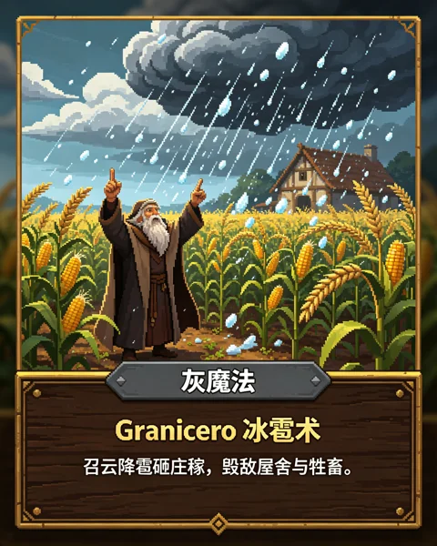
放大阅读 ↗技能与变身 · 参考故事
冰雹术 · Granicero
冰雹术的云层、冰晶与降雹意象参考。
THE INSPIRATION ARCHIVE
灵感图鉴 · HD-2D 参考故事卡
从降雹的魔法到星河中的巨兽，这些卡片是《余烬回廊》创作时用到的参考。
翻开完整卡面，看看技能、怪物与伙伴背后的故事与意象。
本期收录游戏已用到的 19 张参考卡。保留原卡文字与画面；卡面是创作参考，游戏中的角色、技能与规则经过改编。
共 19 张参考故事卡 · 点击卡面可放大

放大阅读 ↗冰雹术的云层、冰晶与降雹意象参考。
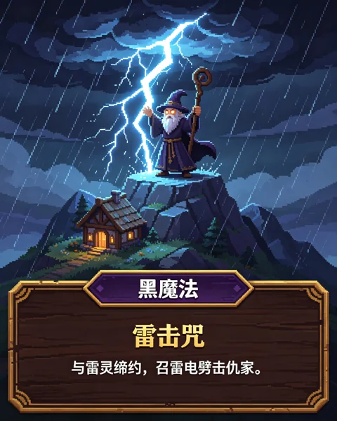
放大阅读 ↗游戏雷击咒的参考卡。
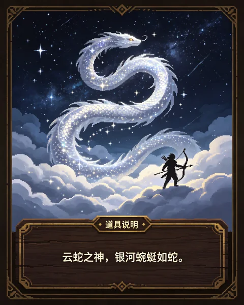
放大阅读 ↗小白白召唤云蛇的形象参考。
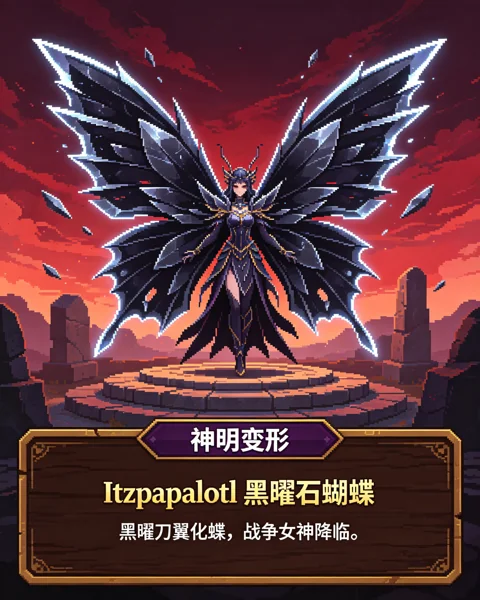
放大阅读 ↗小公主专属变身的参考卡。
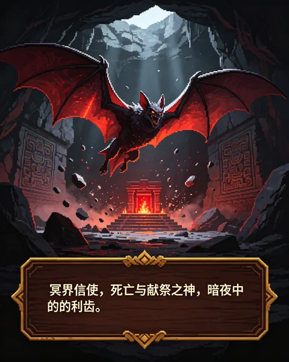
放大阅读 ↗童话森林中的蝙蝠敌人参考。
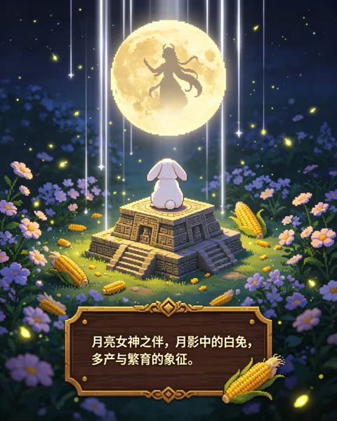
放大阅读 ↗童话森林中的月兔参考。
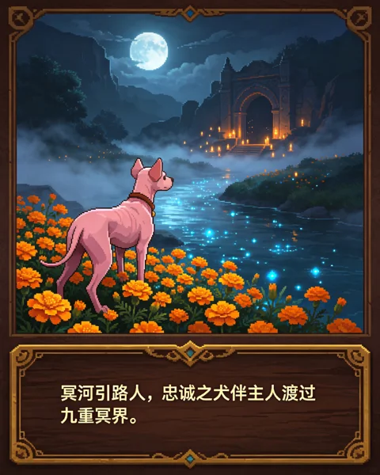
放大阅读 ↗童话森林中的无毛犬参考。
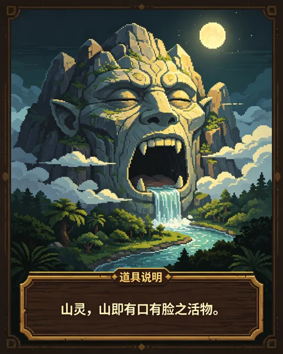
放大阅读 ↗童话森林中的山灵参考。
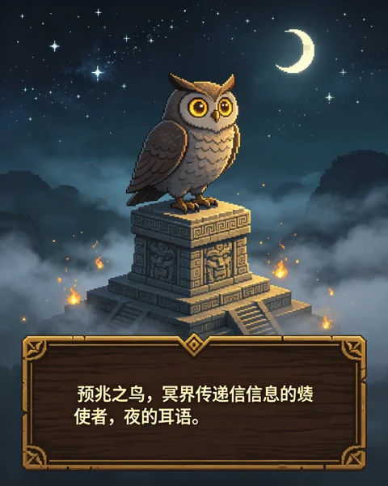
放大阅读 ↗月蚀沼泽中的猫头鹰参考。
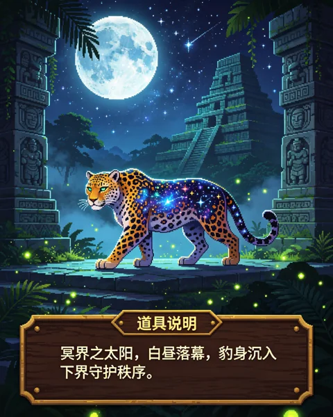
放大阅读 ↗月蚀沼泽中的美洲豹参考。
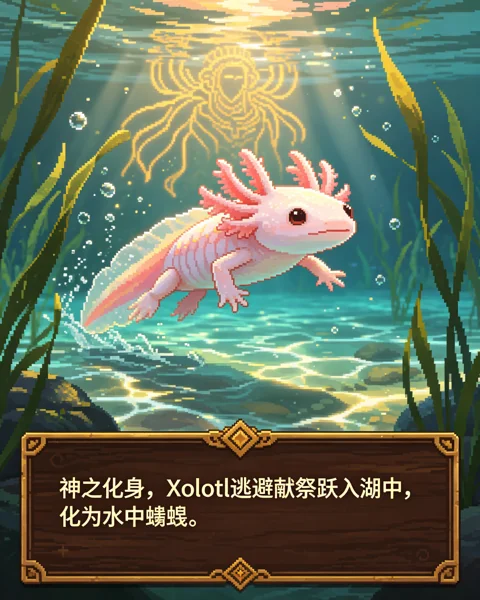
放大阅读 ↗星河天井中的蝾螈参考。
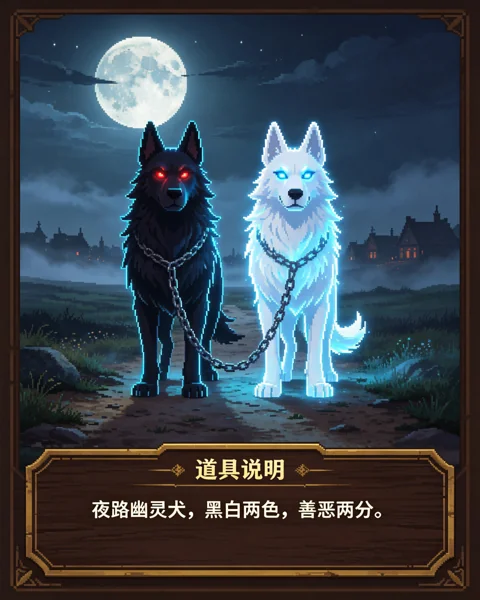
放大阅读 ↗星河天井中的黑白幽灵犬参考。
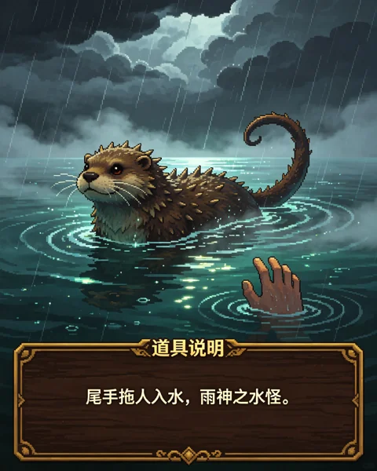
放大阅读 ↗星河天井中的水怪参考。
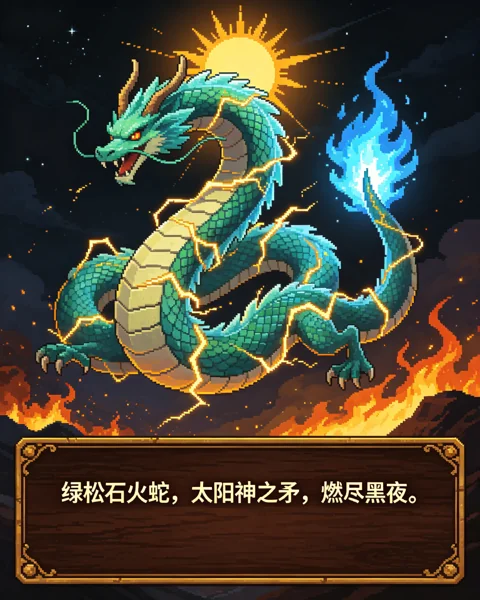
放大阅读 ↗童话森林 Boss 的形象参考。
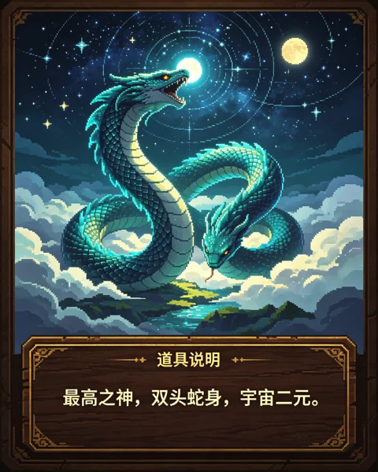
放大阅读 ↗月蚀沼泽 Boss 的形象参考。
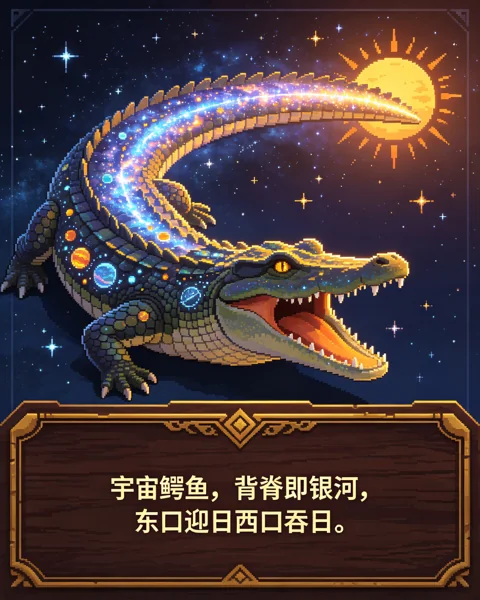
放大阅读 ↗星河天井 Boss 的形象参考。
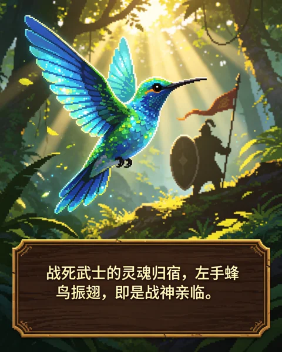
放大阅读 ↗伙伴翠羽蜂鸟的参考卡。
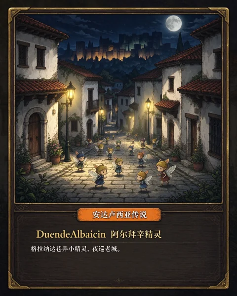
放大阅读 ↗伙伴阿尔拜辛精灵的参考卡。
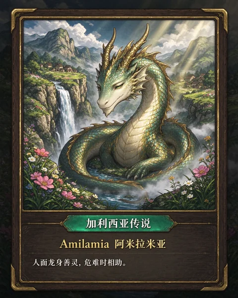
放大阅读 ↗伙伴阿米拉米亚的参考卡。
没有找到对应卡片，试试其他名称或分类。